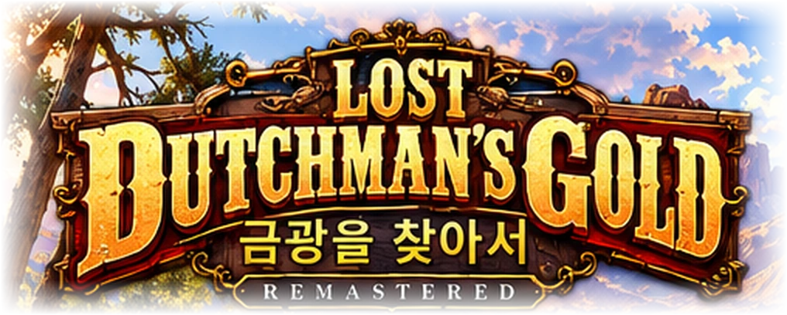

✦
금광을 찾아서
LOST DUTCHMAN MINE · HD REMASTER · 2026
♪ 소리 켜기
? 도움말
⛶ 전체화면
☀ 기온
86°F
◷ 일시
1896. 4. 12 · 09:00
＄ 현금
$270
♥ 체력
100
✦ 식량
100
💧 수분
100
◈ 금광 단서
0 / 6
골드필드
방향키 이동 · E 상호작용
✧ ARIZONA · THE GOLD RUSH · 1896 ✧

사막 너머, 잊힌 황금을 향해
HIGH DEFINITION WESTERN ADVENTURE
살아 숨 쉬는 황야 · 금광 탐사 · 서부의 전설
새 모험 시작
➜
저장한 모험 이어하기
고전 서부 탐광 게임에서 영감을 얻어 독립 제작한 팬 게임 · 오프라인 실행
▲
◀
▼
▶
E
행동
다음 행동을 선택하세요
마을에서 장비를 준비하고, 사막으로 여행을 떠나세요.
▣ 소지품
I
🗺 탐험 지도
M
▤ 탐험 수첩
J
▣ 저장
F6
☾ 휴식 / 캠프
×